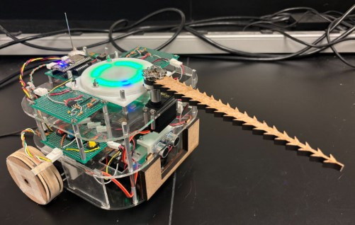

MEAM 5100: Design of Mechatronic Systems (University of Pennsylvania)
Independently designed and manufactured a competitive autonomous robot for a League of
Legends-inspired competition, integrating mechanical, electrical, and software components.
Developed PID control algorithms for precision motor control, achieving accurate
wall-following capabilities through closed-loop feedback control.
Created responsive web interface using HTML/C for manual control, providing intuitive
human-robot interaction.
Incorporated multiple sensors including ultrasonic, Vive localization, and infrared for
autonomous functionality including wall detection and automated button-pressing.
Achieved perfect score of 50/50 in project evaluation.
MEAM 5200: Introduction to Robotics (University of Pennsylvania)
Developed vision-based pick-and-stack algorithm using Franka Emika Panda 7-DOF manipulator
for competitive robotics challenge.
Implemented real-time camera feedback system using AprilTags for precise block detection and
localization.
Applied gradient-based inverse kinematics optimization for accurate end-effector positioning
and collision-free manipulation.
Designed waypoint trajectory planning system ensuring smooth, collision-free movement
throughout manipulation tasks.
Achieved 4th place in class competition, demonstrating effective integration of computer
vision, robotics control, and mechanical precision.
Senior Capstone Project - Project Manager (Jan 2024 – Apr 2024)
Led a team of 5 graduating engineers in designing an AMR platform supporting a 6-DOF Yaskawa
GP-50 robotic arm for industrial metal additive manufacturing and welding.
Designed tracked mobility system capable of 2-ton payload, 15% grade traversal, and extreme
temperature operation (-40°C to 30°C) with 6-hour runtime.
Conducted comprehensive FEA analysis using SolidWorks to validate structural integrity with
≤160-microns end-tool deflection and maximum stress of 62 MPa (safety factor of 5.7).
Delivered functional design proposal within $90,000 budget, featuring 24 LG Lithium-Ion
batteries (62.4 kWh) and custom fabricated components.
Junior Capstone Project - Mechanical Team Member (May 2021 – Aug 2021)
Designed complete transmission system for Mario Kart-inspired high-speed racing application,
focusing on rapid gear changes and optimal power transfer.
Performed detailed gear train analysis including gear ratio optimization, bearing load
ratings, and spline/keyway stress calculations to ensure reliable performance.
Created non-synchronous dog clutch mechanism with precision tolerance specifications and
strategic material selection for racing conditions.
Engineered power transmission paths through input shaft, layshaft, and output shaft
configurations to optimize efficiency and minimize power loss.
Incorporated idler gear system for reverse function, enabling direction reversal without
compromising overall transmission size.